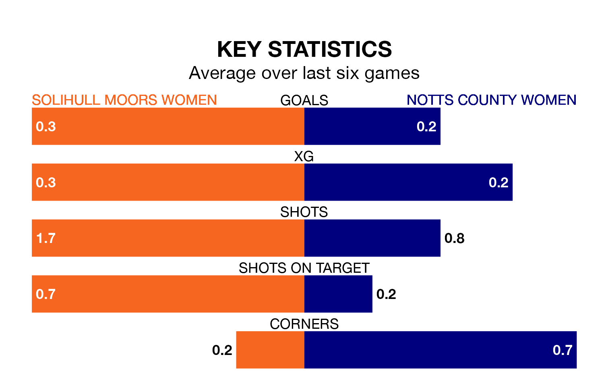

Solihull Moors Women and Notts County Women both come into Sunday's early kick-off in poor form, having picked up four and two points respectively in their last six games.
Solihull Moors have drawn four and lost two of the last six, while Notts County have taken two draws and four losses.
Notts County are 10th in the table after 14 games, of which they have won two and drawn three, earning nine points.
Solihull Moors are four places ahead of the visitors in sixth, with five wins and five draws putting them on 20 points.
With 13 goals in 14 games so far this season, Notts County are the league's second-lowest scorers with 0.9 goals per game. And they are conceding more than average, letting in 50 goals at a rate of 3.6 per game.
The home team are also below average scorers, with 1.1 goals per game, compared to a league average of 1.8. They have conceded 1.3 goals per game.
Solihull Moors's last match was on February 25, a 0-0 draw against Leek Town Women.
Notts County lost 6-0 against Northampton Town Women last time out, on February 4.
Updated: 09:34 (UTC), 08/03/24